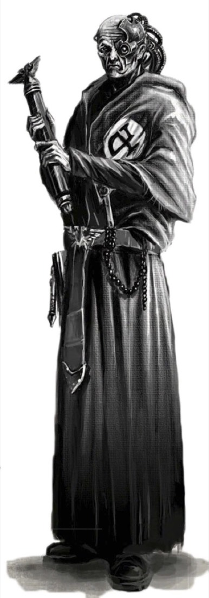

Administratum
| Administratum Adeptus Administratum | |
|---|---|
| Imperial bureaucracy; largest of the Adeptus Terra | |
Sigil of the Administratum Artwork © Games Workshop | |
| Overview | |
| Also called | Imperial Administration (in the Great Crusade and Heresy) |
| Established | Closing years of the Great Crusade |
| State | Imperium of Mankind |
| Leader | Master of the Administratum (a High Lord of Terra) |
| Present Master | Violeta Roskavler (as restored in the Indomitus Crusade) |
| Seat | Imperial Palace, Terra |
| Staff | Uncounted billions |
| Dress | Monastic habits, black for the lowest scribes, lightening to white at the highest ranks |
| Principal divisions | |
Departmento Munitorum Estate Imperium Astra Cartographica Departmento Exacta Logis Strategos Historical Revision Unit Logos Historica Verita | |
| Adeptus Terra Master of the Administratum Departmento Munitorum | |
The Administratum, formally the Adeptus Administratum, is the principal bureaucracy of the Imperium of Mankind and the largest of the institutions of the Adeptus Terra. Its untold billions of scribes, clerks and officials assess the Imperial tithe, keep the records of a million worlds, allocate resources, supply the armies and register almost everything that happens in the Imperium. They work on every inhabited world, and most densely on Terra, where billions labour within the Imperial Palace complex alone.[1]
The Administratum is regarded as the least prestigious of the great adepta, and its head, the Master of the Administratum, is one of the most powerful men in the galaxy. If the Adeptus Terra is the machinery of the Imperium, the Administratum is the oil that keeps it turning, and without it the machinery would stop. The Master has traditionally been the most politically influential of the High Lords of Terra, a position that was dangerously proven when the Master Goge Vandire seized the Imperium in the Age of Apostasy (M36).[1][2]
The organisation is almost entirely impersonal. Its decisions are made by procedure, precedent and calculation, with no regard for the suffering they cause, and it is feared and hated across every stratum of Imperial society. It is also so vast that parts of it have been lost in their own paperwork, while others continue to carry out functions whose purpose ceased to exist long ago.[1][3]
History
[edit]Origins
[edit]The first officials of the Emperor's administration followed his armies through the Unification Wars. By the time the First Legion entered the field the Lords Civilian of Terra were headed by four High Lords Civilian, one of whom, Noum Retraiva, held the office of Master of the Administratum.[4] Imperial tradition, which the Administratum itself has long fostered, regards Malcador the Sigillite as the first Master. The older record has Malcador as chief of the Imperial Administration at the end of the Great Crusade, when it was set up as a body for the new Imperium. The Council of Terra's own minutes, which have since been recovered, show that the office predated him.[4][5]
As the crusade progressed the Emperor and the primarchs had little time for the routine business of an empire that now spanned a million worlds. Assessment of tithes, distribution of resources and every administrative task fell to the clerks, and when the Emperor created the Council of Terra after Ullanor to run the civil affairs of the Imperium, the Administratum became its working arm. Its Master at the time of the Heresy was Simion Pentasian.[4]
Horus Heresy and Reconstruction
[edit]During the Horus Heresy the Imperial Administration kept the records of the loyal worlds and passed on to the Council of Terra the demands of a besieged Throneworld. After the war Pentasian sat on the Grand Council of Reconstruction as Master of the Adeptus Administratum, the name under which the body has been known since.[5] From that point the Administratum was the permanent core of Imperial government.
The Interregnum and the Age of Apostasy
[edit]In the 35th millennium a rival administration on Nova Terra claimed the western reaches of the Imperium during the Nova Terra Interregnum, and for centuries the Imperium had two competing bureaucracies. The loyal Administratum eventually reclaimed the whole of its records.[4]
The worst crisis in the Administratum's history came in the 36th millennium. Goge Vandire, the 361st Master of the Administratum, took the office of Ecclesiarch as well and made himself the single most powerful man in the Imperium since the Great Crusade. His Reign of Blood consisted of purges and murders on a scale not seen since the Heresy, and he placed his own rule above the Emperor's. The reformer Sebastian Thor and the Brides of the Emperor brought him down, and the reforms that followed barred any one official from holding more than one great office.[2]
Era Indomitus
[edit]The return of Roboute Guilliman brought the first challenge to the Administratum's methods in millennia. The primarch found the bureaucracy slow and often incapable of supplying the Indomitus Crusade, and he bypassed it by creating the Officio Logisticarum, called Guilliman's Hand. This was an elite body of millions, drawn from the best of the Administratum and the Departmento Munitorum of Terra, which was empowered to requisition military protection and to build planetary hub-fortresses from which to supply the crusade fleets.[6] He also founded the Logos Historica Verita, a small body of historitors, trained by him in evidence-based method, whose task is to recover the true history of mankind. This work runs against that of the Historical Revision Unit, whose adepts have long deleted and rewritten the record for the glory of the Emperor.[6][1]
Many of the Administratum's chiefs opposed him. The former Master of the Administratum Irthu Haemotalion, one of the High Lords removed in the Primarch's Scourge, led the Hexarchy conspirators in an attempted coup against the Lord Commander while he was away on the crusade,. Guilliman restored the High Twelve with Violeta Roskavler as Master of the Administratum.[6]
Organisation
[edit]
The Administratum is divided into a number of departments so large that probably no one, not even its Master, can say how many there are. Most are petty and of no interest to anyone outside them. Its adepts, who often hold their posts by inheritance, are required to perform their tasks but not to understand them. It is said among the soldiers of the Astra Militarum that for each trooper there are a dozen scribes and at least two minor officials recording details that no one will ever read.[1]
Principal divisions
[edit]| Division | Function |
|---|---|
| Departmento Munitorum | Raising, supply, training and transport of the Astra Militarum. See below. |
| Estate Imperium | The "million-strong records office" of the Administratum, led by the Chancellor of the Estate Imperium, who sometimes holds a seat among the High Lords. |
| Astra Cartographica (Departmento Cartographicae) | Maps the galaxy, employing Rogue Traders and, at times, the cartomancers of the Navis Nobilite to chart stable Warp routes. |
| Departmento Colonia | Founds new colonies and requests military protection for them through the Munitorum. |
| Departmento Exacta | Collects the Exacta, the civilian resource tithe, second in importance only to the military tithe. It has a reputation for mercilessness and may call for the invasion of a world that falls short. |
| Departmento of Final Consideration | Processes requests for military aid and decides what is done about the Priority Ultima pleas of threatened worlds. Its hereditary adepts live in the Inner Palace of Terra and decide the fate of billions. |
| Departmento Gradio | Assigns classification grades to documents. |
| Departmento Processium | Receives and routes the paperwork of the whole Administratum. Its scribes are hereditary serfs working long shifts under overwatchers. |
| Departmento Contagio and Officio Medicae | Public health and plague control. |
| Logis Strategos | Intelligence-gathering and analysis; devises strategies against the enemies of the Imperium for the Munitorum and the High Lords. |
| Historical Revision Unit | Revises or destroys records to present the history that most glorifies the Emperor. Its "Deletions Teams" carry out the Edict of Obliteration against those declared Excommunicate Traitoris. |
| Logos Historica Verita | Founded by Guilliman in the Era Indomitus to recover an accurate history of mankind. |
| Imperial Fleet | The administrative umbrella of almost all faster-than-light voidships: the Imperial Navy, the merchant fleets and the civil fleets. |
Ranks and titles
[edit]The ranks of the Administratum are shared with the Adeptus Terra as a whole. Adept is the general title of members of the Adeptus Terra. A scribe is a low functionary who keeps records. An ordinate is a minor administrative official, a prefect a senior officer, a curator a keeper of the ancient records and a master the head of a department. Historitors write and, in the older sense, rewrite history. Ciphers memorise messages that cannot be trusted to astropaths and deliver them word for word with no knowledge of their meaning. Menials are the free workers who keep its facilities running and subordinates are hereditary slaves. In the Munitorum the questors enforce work quotas and discipline with ruthless thoroughness.[1]
The Administratum's dress is monastic. The lowest scribes wear black, and the habits of higher ranks become progressively lighter through grey to pure white.[1]
Powers and functions
[edit]The Imperial tithe
[edit]The Administratum's most important function is the assessment and collection of the Imperial tithe. Each world is classified, and the Administratum assigns it a tithe grade, from Aptus Non, which exempts a world, to Exactis Extremis, the heaviest burden. A world may owe soldiers, materials or psykers. An error in the classification can ruin a world, and the Administratum has been known to "lose" a world entirely through administrative failure, condemning it to centuries of isolation.[1]
Record-keeping and the census
[edit]Nothing occurs in the Imperium that is not at some point recorded by an Administratum scribe, catalogued, copied in quadruplicate, processed by the datamills and, perhaps many centuries later, archived. It is for this reason that the Inquisition, which needs information more than any other body, so often must deal with it. Procedure is slow: each stage of processing may take months or years, depending on the perceived relevance of the data.[1][7]
Corruption and error
[edit]The organisation's weaknesses are those of any bureaucracy of its size. Departments feud, jurisdictions overlap, and the rigid adherence to regulations is itself a source of friction. The Administratum's ignorance of the world beyond its offices leaves its local officials open to deception and corruption. Yet its greatest defence is its own complexity, which makes it exceedingly difficult to subvert on a wide scale. If a thousand adepts must be purged to correct a tithe repository's records, they are purged.[1]
Departmento Munitorum

The Departmento Munitorum, also called the Adeptus Munitorum, is the division of the Administratum responsible for the administration, supply and transport of the Astra Militarum. It raises new regiments, trains them, equips them in the field, plans operations through the Militarum Strategos and carries soldiers to the war zones aboard the ships of the Imperial Navy. It deals only with the military logistics that the wider Administratum, which administers the civil logistics of the whole Imperium, does not. Its remit includes the Ordo Tempestus, which fields the Militarum Tempestus, and the commissars of the Officio Prefectus.[3][1]
The Munitorum was founded in the early years of the 31st millennium, during the Great Crusade. At first expeditionary fleets took what they needed from the worlds they conquered, and each fleet commander arranged his own supply. As the Imperium grew, this became impossible, and the newly formed Council of Terra recruited individuals able to administer armies at scale. The earliest form of the Munitorum was called the Corps Logisticae, for a time a division of the Armada Imperialis, and for a time under Malcador and his appointed subordinates. Shortly before Horus was named Warmaster after Ullanor it became a full department of the Imperial Administration.[4]
The Munitorum is known throughout the Astra Militarum for its harshness. The famed Imperial Infantryman's Uplifting Primer, a handbook issued to Guardsmen by the Departmento, instructs the soldier on the importance of carrying out orders without question.[3] In the Indomitus Crusade, Guilliman bypassed the department with the Officio Logisticarum,.[6]
Relations with other bodies
[edit]- High Lords of Terra
- The Master is a permanent member, and the Administratum issues every edict of the council.
- Inquisition
- The Inquisition frequently requires access to the Administratum's records. It has the authority to demand them and to purge departments, but must deal with delay and obstruction, and meets delay and obstruction.[7]
- Adeptus Mechanicus
- The Mechanicus keeps its own records and is not bound by the Administratum's processes, though it is classed within the same administration of the Imperial Fleet.
- Ecclesiarchy
- The Administratum and the Ecclesiarchy contested for supremacy over the Imperium until Vandire's fall, and the memory of that struggle affects relations between them still.[2]
Timeline
[edit]| Date | Event |
|---|---|
| c. 797.M30[a] | The first officials of the Emperor's administration follow the armies through the Unification Wars. |
| c. 003.M31[b] | The Imperial Administration is set up as a body for the new Imperium at the end of the Great Crusade. |
| 000.M31 | After the Triumph of Ullanor, the Council of Terra makes the Administratum its working arm. The Departmento Munitorum becomes a full department. |
| 005–014.M31 | During the Horus Heresy, the Imperial Administration keeps the records of the loyal worlds under Master Simion Pentasian. |
| 014.M31 | After the war, Pentasian sits on the Grand Council of Reconstruction as Master of the Adeptus Administratum. |
| c. 300.M35[c] | A rival administration on Nova Terra claims the western reaches of the Imperium during the Nova Terra Interregnum. |
| M36 | Goge Vandire, the 361st Master of the Administratum, becomes Ecclesiarch as well and begins the Reign of Blood. |
| 378.M36 | Vandire is killed, and the reforms that follow forbid any one official from holding more than one great office. |
| c. 999.M41[d] | Roboute Guilliman returns and sets up the Officio Logisticarum, known as Guilliman's Hand, to bypass the department's delays. |
| c. 012.M42[e] | Guilliman founds the Logos Historica Verita. The Hexarchy conspirators attempt a coup while the Lord Commander is away on the Indomitus Crusade, and Violeta Roskavler is restored as Master of the Administratum. |
See also
[edit]Notes
[edit]References
[edit]- ^ a b c d e f g h i j k War Zone Octarius - Book 2: Critical Mass (9th Edition), pg. 70. Games Workshop. Haley, Guy. Avenging Son (novel). Black Library, Chs. 4, 7, 9, 16, 22, 27.
- ^ a b c Haley, Guy. Dark Imperium (novel). Black Library, Ch. 9 "Imperator Gloriana," pp. 94-97. Haley, Guy. Shadowsword (novel). Black Library, Chs. 1 (pp. 11-21), 5.
- ^ a b c Warhammer 40,000 Rulebook (8th Edition), pg. 278. Games Workshop. Deliverance Lost (novel) by Gav Thorpe.
- ^ a b c d e Warhammer 40,000: Rulebook (Digital Edition) (7th Edition), pp. 271, 275, 281, 283, 286, 298, 301, 304, 321, 339, 374, 386, 464, 540-541, 544, 546, 550. Games Workshop. Warhammer 40,000: Rulebook (6th Edition), pp. 139, 404-405. Games Workshop.
- ^ a b Codex: Eye of Terror (3rd Edition), pg. 13. Games Workshop. Codex: Tyranids (3rd Edition), pg. 41. Games Workshop.
- ^ a b c d Codex Imperialis, pp. 12-14. Games Workshop. Imperial Armour Volume Eight - Raid on Kastorel-Novem, pg.7.
- ^ a b Imperial Munitorum Manual, pp. 3, 8. Rogue Trader: Hostile Acquisition, pp. 88-90.